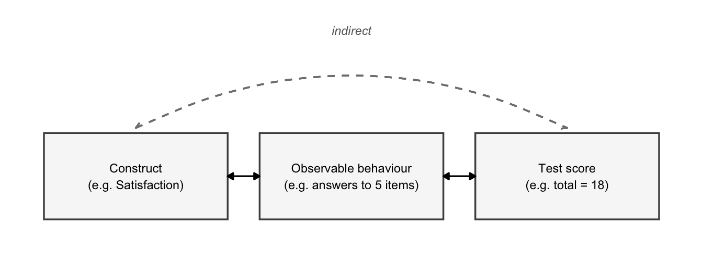
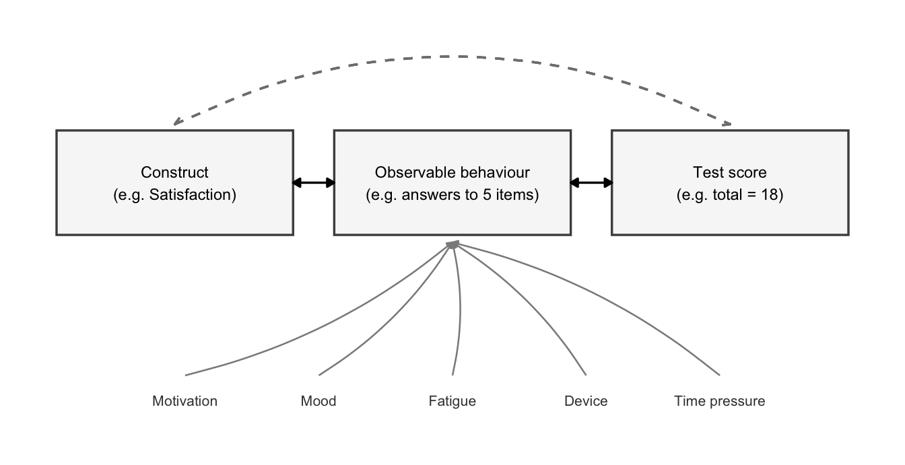
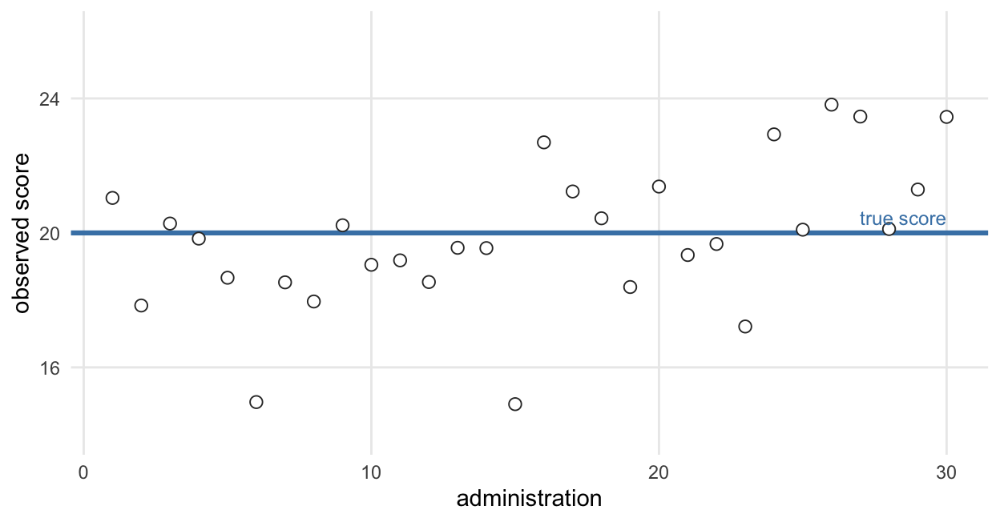
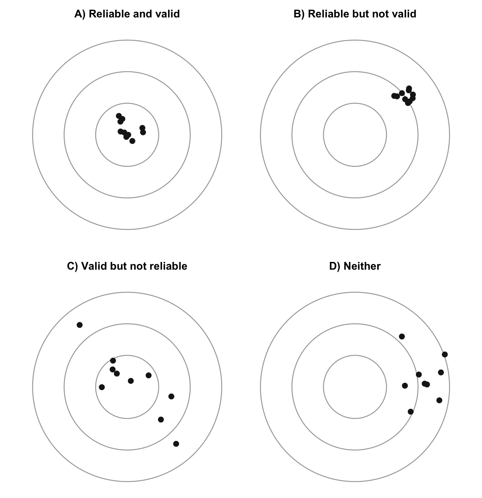

app_engagement_experiment |>
select(error_rate_pct, engagement_score) |>
head()
#> error_rate_pct engagement_score
#> 1 9.43 55.2
#> 2 6.44 46.1
#> 3 7.83 57.4
#> 4 12.40 65.1
#> 5 9.08 57.2
#> 6 8.80 56.31 Measurement in Psychology
by Giorgio Arcara
1.1 Introduction to the problem
Imagine you are evaluating a wellbeing app, and you have two numbers for each user. The first is how many times they opened the app last month. The second is how much their stress went down over the same period, measured with a short questionnaire they filled in every week.
Both are numbers. Both will sit in the same data frame, in adjacent columns, and every function in this book will treat them identically. But they are not the same kind of thing at all.
The first one you could, in principle, verify. If you doubted it, you could go to the server logs and count. “Number of app opens” is a description of something that happened, and the number is the thing itself.
The second is not. Notice that I did not write “the score on the stress questionnaire” — I wrote “stress reduction”. The score is a number you obtained; stress is a psychological concept, and nobody has ever observed one directly. You cannot go and check. The number is standing in for something, and how well it stands in for it is a question the number itself cannot answer.
This distinction is the subject of an entire discipline, psychometrics: the study of how psychological attributes can be measured, and of how well a given instrument manages it.1 Psychometrics exists because measurement in psychology is a peculiar business. It does not deal with physical properties of physical objects, but with constructs — psychological concepts that are not directly observable.
Let me make the point concretely, with data.
error_rate_pct is the percentage of sessions in which the user made an error. Errors were logged; they were counted; the percentage was computed. engagement_score is an index meant to capture how engaged the user is — engagement being a psychological concept, not an event in a log file.
app_engagement_experiment |>
select(error_rate_pct, engagement_score) |>
summary()
#> error_rate_pct engagement_score
#> Min. : 3.32 Min. : 36.3
#> 1st Qu.: 7.24 1st Qu.: 56.2
#> Median :10.76 Median : 66.0
#> Mean :11.17 Mean : 68.2
#> 3rd Qu.:14.20 3rd Qu.: 78.7
#> Max. :28.80 Max. :130.3
#> NA's :4Look at that output and try to tell which column is which kind. You cannot. Both are numeric, both have a mean and a median and quartiles, and R will happily correlate them, plot them, or feed them to a regression. Nothing in the data, and nothing in your software, will ever warn you that one of these columns is a direct record and the other is a stand-in.
That is what this chapter is about.
1.2 Constructs and proxies
We need two terms.
Definitions
Construct — a psychological concept that is not directly observable (satisfaction, attention, trust, cognitive load). To be measured at all, it has to be tied to one or more indicators.
Indicator (or proxy) — an observable behaviour which, alone or together with others, we assume is a manifestation of the construct. Answers to the items of a questionnaire are the typical case.
The fact that constructs are unobservable is not, by itself, a catastrophe, and it is not unique to psychology. Temperature is not directly observable either. What we observe in an old-fashioned thermometer is a column of liquid metal getting longer, and we convert that length into a number we call degrees. Nobody objects, because the physical relationship between temperature and the expansion of the metal is tight, well understood, and does not depend on what kind of day the thermometer is having.
Psychological measurement has the same shape — an observable indicator standing in for an unobservable property — and this is where the resemblance ends. The link between a construct and the behaviour we use to indicate it is far looser than the link between temperature and expansion, for two reasons.
The first is that there is no one-to-one correspondence between a behaviour and a single underlying process. Almost by definition, any behaviour can be produced by more than one route. A user who fails a task may not lack the ability the task was designed to probe: they may have misread an ambiguous label, been distracted by a notification, misunderstood the instructions, or simply been fighting an unfamiliar device. The failure is real; what it indicates is not settled by the fact that it happened.
The second is that a great many variables that we do not care about can push the observed behaviour around. Motivation, mood, fatigue, time pressure, the device being used, how clearly the instructions were phrased — all of these can move the indicator without moving the construct at all.
Figure 1.1 draws the basic situation, and Figure 1.2 adds the complication.
#> Warning in geom_curve(aes(x = 1, xend = 6.4, y = h + 0.05, yend = h + 0.05), : All aesthetics have length 1, but the data has 3 rows.
#> ℹ Please consider using `annotate()` or provide this layer with data
#> containing a single row.
#> Warning in geom_curve(aes(x = 1, xend = 6.4, y = h + 0.05, yend = h + 0.05), : All aesthetics have length 1, but the data has 3 rows.
#> ℹ Please consider using `annotate()` or provide this layer with data
#> containing a single row.
1.3 Measurement in psychology
If measuring a construct is this awkward, it is worth asking what we even mean by “measurement”. There is more than one answer, and the differences are not academic.
Stevens, and the four scales
The most influential definition in the history of psychology is S. S. Stevens’, from a 1946 paper in Science:2
Definition
Measurement (Stevens, 1946) — “the assignment of numerals to objects or events according to rules.”
It is worth knowing why that definition is so permissive. In the years before the paper, a commission of physicists and psychologists had been convened to settle whether psychological attributes could be measured at all — and, by implication, whether psychology was a science. Working from a strict definition of measurement borrowed from physics, they concluded that it could not. Stevens’ response was that the problem lay in the definition, not in psychology. He widened it, and psychology was readmitted.
He did not leave it at that, though. Having allowed almost any rule to count as measurement, he added the part that does the real work: what you are permitted to do with the resulting numbers depends on the scale of measurement.
| Scale | Description | Example | Operations that make sense |
|---|---|---|---|
| Nominal | Categories with no order | Device platform (iOS/Android) | Counting, mode |
| Ordinal | Ordered, but the gaps between categories are not comparable | Satisfaction rating, app-store rank | Ordering, median, percentiles |
| Interval | Ordered, with equal intervals, but no meaningful zero | A standardised UX score, temperature in °C | Addition, subtraction, mean, SD, z-scores |
| Ratio | Ordered, equal intervals, and a meaningful zero | Reaction time, session duration, number of taps | All arithmetic, including ratios |
Recording whether a user is on iOS or Android is, on this definition, measurement. It is just measurement on a nominal scale, where about the only sensible thing to do is count how many fall in each category. Nobody would try to compute the average operating system, and the reason we all find that obviously absurd is precisely what Table 1.1 is about. The trouble is that the equivalent absurdities further down the table are not obvious at all.
Suppes and Zinnes, and a stricter bargain
The other definition worth knowing is Suppes and Zinnes’ (1963).3 It is more rigorous, less intuitive, and needs two pieces of vocabulary. An empirical relational system is the set of things in the world that have the property you want to measure, together with the relations that hold among them. A numerical relational system is a set of numbers, together with the relations among them.
Definition
Measurement (Suppes & Zinnes, 1963) — a homomorphism between an empirical relational system and a numerical relational system: a correspondence that preserves the relations between elements.
An example makes this concrete. Take a table with a side 120 cm long, and another with a side 60 cm long. Three separate claims follow from those numbers, and all three are true of the tables:
- The first table’s side is longer than the second’s.
- The first table’s side is 60 cm longer than the second’s.
- The first table’s side is twice as long as the second’s — put two of the small tables side by side and they occupy the same span.
Every relation among the numbers corresponds to a relation among the tables. That is the homomorphism.
Now try the same three claims with a satisfaction score, where one user scores 20 and another 10.
- The first user is more satisfied than the second. Plausible.
- The first user is 10 units more satisfied. Ten units of what?
- The first user is twice as satisfied as the second. Is that a sentence that means anything?
Only the first claim survives comfortably. And Suppes and Zinnes’ point is precisely that you do not get to assume the other two just because you have numbers that permit the arithmetic. Whether the numerical system really represents the structure of the empirical one is something to be demonstrated, not taken for granted.
Classical Test Theory
Most instruments you will meet, in psychology and in UX research, were built under a third framework, which comes at the problem from a different angle: instead of asking what measurement is, it asks what a score contains. This is Classical Test Theory (CTT), and it rests on one equation.
Definition
\[X = T + E\]
\(X\): the observed score — what you actually get. \(T\): the true score — what the person would score with no measurement error. \(E\): the measurement error — a random component, positive or negative, averaging zero.
Every time you administer an instrument you get an imperfect estimate. Someone whose true score is 20 might score 17 on a day when they are tired and distracted, or 22 on a day when they are rested and paying attention. The true score \(T\) is formally defined as the average of the observed scores you would get over infinitely many administrations under identical conditions: if the error really is random and centred on zero, the positive and negative departures cancel out in the long run.
CTT also assumes \(T\) and \(E\) are independent — that the size of the error does not depend on how high or low the person’s true score is.
Figure 1.3 shows what this looks like: thirty administrations of the same instrument to the same person.

This picture has a consequence worth stating plainly, because it is easy to nod at and then forget: in practice you always see a single observed score. One circle. You never see the line. Everything you conclude about the person rests on one draw from a distribution whose centre you are trying to guess.
Two priorities follow. Make \(E\) as small as possible, so that the circle lands near the line. And estimate how big \(E\) is, so you know how much to trust the circle you got. The second half of this chapter is mostly about those two jobs.
CTT has real limitations. The most relevant one here is that the independence of \(T\) and \(E\) breaks down at the ends of the scale. If someone’s true score is at the maximum, error cannot push their observed score any higher — it can only pull it down. The error stops being symmetric, and stops being independent of \(T\). On bounded scales, which is to say on most UX instruments, this matters.
Other measurement models exist
CTT is the dominant framework and the one this chapter uses, but it is not the only one, and its limitations have known answers. Item Response Theory (IRT) — a family of models descending from the Rasch model — represents item difficulty and person ability as separate parameters rather than bundling them into a single total score, and can provide the justification for an interval scale that CTT simply assumes. Other approaches drop the assumption that a construct is best described by a number at all: Knowledge Space Theory, for instance, describes a person as occupying one of a set of states organised in a network, rather than a position on a line. None of these are covered here, but it is worth knowing they exist, and that “this is how it has always been done” is not an argument that CTT is right.
1.4 Interval scales as an assumption, not a demonstration
Here is the uncomfortable part. The great majority of psychological instruments — and effectively all the UX scales you will meet in practice — are analysed as though their scores were on an interval scale. Means are computed, standard deviations are reported, difference scores are taken, regressions are fitted. Every one of those operations requires interval-level measurement.
Almost none of those instruments ever demonstrated that they have it.
In most psychological and UX instruments, interval-level measurement is assumed, not shown. It is the starting point, not a finding.
Apply the interval assumption to a five-point satisfaction item and see whether you believe it. The assumption says the distance from 1 to 2 is the same as the distance from 4 to 5. But moving a user from “very dissatisfied” to “dissatisfied” and moving one from “satisfied” to “very satisfied” are not obviously the same amount of anything. Or take a 0–100 usability score: is a gain of 2 points at 96 — where you are running out of scale — really the same as a gain of 2 points at 60?
This is why, on the standard view, Likert responses should be treated as ordinal data. They are ordered categories. The numbers 1 to 5 are labels that happen to sort correctly; they are not measurements of a quantity.4
Let me state my own position, because this is a place where it is easy to take the argument too far. I do not think any of this means you should throw out your satisfaction scale. An instrument with questionable assumptions is very often better than no instrument, and a purist who refuses to measure anything until the measurement theory is airtight will simply not measure anything. What I do think is that you should know which assumption you are relying on, and be able to say what would happen if it were wrong. Sometimes nothing happens. Sometimes quite a lot does.
What the assumption actually costs
Start with real data. daily_mood_ratings records daily mood on a 1–7 scale.
table(daily_mood_ratings, useNA = "always")
#> daily_mood_ratings
#> 1 2 3 4 5 6 7 <NA>
#> 266 270 175 98 33 11 2 145mean(daily_mood_ratings, na.rm = TRUE)
#> [1] 2.3
median(daily_mood_ratings, na.rm = TRUE)
#> [1] 2The mean is about 2.3. Now ask what that number denotes. It is not a response anybody could have given — there is no such thing as a mood of 2.3 on this scale. It is the centre of gravity of a set of category labels, and it only means something if the gaps between those labels are equal, which is exactly what we have no evidence for. The median, 2, makes a weaker claim and needs a weaker assumption.
(Notice also the 145 missing days. We will come back to those.)
Now the more serious question: can this assumption change what you conclude? It can, and the rest of this chapter runs on a simulated example that shows how.
A running example
We will use a simulated 5-item app-satisfaction scale, administered to users of two versions of an interface. Simulation is the right tool here for one specific reason: it hands us the true score \(T\), which no real dataset ever will. The generating machinery is explained in Chapter 2.
satisfaction <- simulate_likert(n = 200,
group = c("standard", "redesigned"),
seed = 2026)
head(satisfaction)
#> respondent group item_1 item_2 item_3 item_4 item_5 total
#> 1 R001 standard 4 5 5 3 5 22
#> 2 R002 redesigned 4 4 3 3 5 19
#> 3 R003 standard 4 3 4 3 5 19
#> 4 R004 redesigned 2 4 5 3 4 18
#> 5 R005 standard 3 2 3 4 5 17
#> 6 R006 redesigned 4 1 1 1 1 8
#> true_score
#> 1 0.521
#> 2 -0.580
#> 3 0.139
#> 4 0.415
#> 5 -0.667
#> 6 -2.016Each row is a user: five item responses, their total, and — the luxury of simulation — the true satisfaction that generated them.
Now for the demonstration. Consider a different pair of groups, constructed so that the two groups have exactly the same average satisfaction and differ only in how spread out they are. Some populations are more homogeneous than others; that is not a difference in satisfaction.
ceiling_effect <- simulate_likert(n = 300,
group = c("standard", "redesigned"),
group_effect = 0, # same mean
group_sd = c(1, 2.5), # different spread
seed = 41)
# The truth, which only simulation lets us check:
tapply(ceiling_effect$true_score, ceiling_effect$group, mean)
#> standard redesigned
#> 0.110 -0.032The two groups are, as designed, equally satisfied. Let us now analyse their scores the two ways.
# Treating the total as an interval-scale measurement:
t.test(total ~ group, data = ceiling_effect)$p.value
#> [1] 0.00417
# Treating it as ordinal:
wilcox.test(total ~ group, data = ceiling_effect)$p.value
#> [1] 0.445The \(t\)-test reports a difference, convincingly. The rank-based test does not. And we know, because we built the data, that there is no difference in satisfaction to find.
What went wrong? The scale has a ceiling: most responses pile up at the top, which is what satisfaction scales actually do.
table(ceiling_effect$item_1)
#>
#> 1 2 3 4 5
#> 45 37 29 44 145With a ceiling, the wider group loses more of its distribution off the top of the scale than the narrower group does, and that asymmetry shows up as a difference in mean total. The arithmetic is not wrong — those group means really do differ. The interpretation is wrong: “the redesigned group is less satisfied” does not follow, and it happens not to be true.
The clinching test is to change nothing except the response process. Keep the same people and the same true scores, but make the response categories evenly spaced, so the item behaves like an interval measure:
even <- simulate_likert(n = 300, group = c("standard", "redesigned"),
group_effect = 0, group_sd = c(1, 2.5),
equal_spacing = TRUE, seed = 41)
t.test(total ~ group, data = even)$p.value
#> [1] 0.502
wilcox.test(total ~ group, data = even)$p.value
#> [1] 0.615Both tests now agree that there is nothing there. The data did not change. The people did not change. The construct did not change. Only the assumption about what the numbers mean did.
1.5 Reaction time as a measurement problem
Satisfaction scales are the hard case. It is worth looking at the easy one, because it turns out not to be that easy either.
Reaction time is genuinely ratio-scaled: it has a meaningful zero, the intervals are equal, and 400 ms really is twice 200 ms. On the scale question, RT is above reproach — which makes it a good illustration that a well-behaved scale does not hand you a well-behaved measure.
Consider reported_daily_screen_time, self-reported hours of daily screen use:
summary(reported_daily_screen_time)
#> Min. 1st Qu. Median Mean 3rd Qu. Max.
#> 10.0 11.2 11.5 12.2 11.8 360.0One value is 360 — somebody entered minutes into a field expecting hours. Watch what a single bad entry does:
mean(reported_daily_screen_time)
#> [1] 12.2
median(reported_daily_screen_time)
#> [1] 11.5clean <- reported_daily_screen_time[reported_daily_screen_time < 50]
mean(clean)
#> [1] 11.5
median(clean)
#> [1] 11.5The mean moves by about 0.7 hours because of one observation out of 500. The median barely notices. This is the standard reason to prefer the median for duration and latency measures, and it is a measurement decision, made before any model is fitted.
Real reaction-time data adds a further complication that is worth naming even though the package data does not show it.
A caveat about this dataset
reaction_times in behdslabs is a linear rescaling of the heights data, so its distribution is symmetric:
with(reaction_times, c(mean = mean(rt_ms), median = median(rt_ms)))
#> mean median
#> 368 370Real reaction times are not like this. They are strongly right-skewed: a long tail of slow responses, and a hard floor below which nobody can respond. That skew is itself a measurement issue, because it means the mean RT is pulled around by the slowest trials, which are often the least informative ones — lapses of attention rather than slow processing. Use this dataset to practise the mechanics, not to form intuitions about what RT distributions look like.
Three more decisions hide inside any RT analysis, and none of them are statistical:
- Trimming. Responses under ~150 ms are usually anticipations, not responses. Responses over some cut-off are usually lapses. Where you put the cut-offs changes your results, and there is no universally correct answer.
- Mean or median. Given the skew, these answer different questions.
- The speed–accuracy trade-off. A participant can always go faster by being less careful. An RT difference between two interfaces may be a difference in speed, a difference in caution, or both — and RT alone cannot tell you which.
That last point is the same problem as the satisfaction scale, in a different costume: the proxy is contaminated by something that is not the construct.
1.6 Signal detection theory
There is one classical technique that addresses that contamination head-on, and it is worth a short section because it shows what a solution looks like.
Suppose you are testing whether users can spot a phishing message. You show them a series of messages, some fraudulent and some not, and they say “fraudulent” or “not”. The obvious summary is the proportion they got right.
The obvious summary is contaminated. Proportion correct mixes together two entirely different things: how good the person is at telling the difference (which is what you want to know), and how willing they are to say “fraudulent” (which you do not). Someone who flags everything as fraudulent catches every phishing message and is not thereby a good detector.
Signal detection theory separates the two.5 Sensitivity, written \(d'\), is the construct: how far apart the evidence is, on average, for real and fake messages. The criterion is the response tendency: how much evidence someone needs before they will commit to “fraudulent”.
Here are two participants, simulated so you can see both parameters:
detection <- simulate_sdt(n = 2, n_trials = 2000,
d_prime = c(0.8, 2.0),
criterion = c(0.4, -0.475),
seed = 2026)
detection
#> participant hits misses false_alarms correct_rejections prop_correct
#> 1 P01 658 342 331 669 0.663
#> 2 P02 993 7 670 330 0.661
#> d_prime criterion
#> 1 0.8 0.400
#> 2 2.0 -0.475Both are right about 66% of the time. On proportion correct they are indistinguishable. But look at the counts: the second participant caught 993 of the 1000 real threats, against the first participant’s 658 — and raised 670 false alarms against 331. The second is a much better detector with a wildly trigger-happy criterion, and the summary statistic hides this completely.
Recovering the construct takes one line. Compute the hit rate and the false-alarm rate, convert both to the \(z\) scale, and take the difference:
hit_rate <- detection$hits / (detection$hits + detection$misses)
fa_rate <- detection$false_alarms /
(detection$false_alarms + detection$correct_rejections)
qnorm(hit_rate) - qnorm(fa_rate)
#> [1] 0.844 2.017Those are, to within sampling error, the d_prime values the data were generated from — 0.8 and 2.0. One participant is more than twice as sensitive as the other, and no amount of staring at “66% correct” would have told you.
This is the whole chapter in miniature: a raw proxy conflated a construct with something irrelevant to it, and a measurement model pulled them apart.
1.7 Validity and reliability
We now have the vocabulary to ask the question that matters about any instrument: is it any good? Under CTT the answer has two halves, and they are not the same question.
Validity asks what are we measuring? — whether the true score \(T\) really reflects the construct we claim. Reliability asks how precisely are we measuring it? — how small \(E\) is.
The standard picture is Figure 1.4.

The relationship between the two is asymmetric, and it is worth being precise about it. An instrument can be reliable without being valid: it can measure something with great precision, and that something can be the wrong thing (panel B). The reverse is not really available. A valid instrument has to be reliable, because you cannot measure a construct well with a tool that gives you a different answer every time. Reliability is necessary for validity, but not sufficient.
Validity
Two things about validity need saying before anything else, because they are the errors people actually make.
The first is that “this test is valid” is not a meaningful statement. Validity is not a property of an instrument. It is a property of a specific interpretation of its scores, for a specific purpose, in a specific population. The same satisfaction scale can have excellent evidence supporting its use for comparing two versions of an interface, and no evidence whatsoever supporting its use for predicting whether someone will still be a customer in a year.
Do not say “the scale is valid”. Say “there is evidence supporting this interpretation of the scale’s scores, for this use, in this population” — or admit that there isn’t any.
The second is that validity is not a yes/no property but a continuum. Evidence accumulates across studies, and your confidence should track it.
Modern practice, following the Standards for Educational and Psychological Testing,6 treats validity as a single unified concept supported by five sources of evidence. The older labels (construct validity, criterion validity, and so on) are still what you will meet in most papers and manuals, so Table 1.2 gives both.
| Source of evidence | Classical label | Example |
|---|---|---|
| Content | Content validity | A “digital literacy” scale whose items are all about smartphones, with nothing on desktops, under-represents what it claims to measure |
| Response processes | — | Users who reach “task success” by guessing which icon looks clickable are not demonstrating the understanding the task was built to probe |
| Internal structure | Factor structure | Do the five satisfaction items behave as one construct, or do they split into “ease of use” and “visual appeal”? |
| Relations with other variables | Construct, convergent/ divergent, criterion, ecological | A satisfaction score should correlate with retention (convergent) but not with typing speed (divergent); predicting 30-day churn is criterion evidence; predicting real out-of-lab use is ecological evidence |
| Consequences of testing | — | A usability threshold used to gate access to a feature, which systematically excludes older users, has consequences that need examining |
Two specific failure modes cut across all five, and they are the two you should be able to name:
- Construct under-representation — the instrument leaves out parts of the construct it claims to cover. The digital-literacy scale above is a case.
- Construct-irrelevant variance — the scores are systematically pushed around by something that is not the construct. A “reasoning” task whose items are so wordy that it partly measures reading ability is a case. So, for that matter, is the response bias in the phishing example.
Both are in Figure 1.2, which is what that figure was for.
A brief historical note. You will occasionally meet face validity: whether an instrument looks like it measures what it claims. It is worth knowing the term mainly so you can recognise that it is not evidence. The phrase does not appear once in the 230-odd pages of the Standards. An instrument can look entirely convincing and be measuring something else, which is precisely why we need the other five kinds of evidence. (Face validity is not always even desirable: an instrument designed to detect people faking their responses works better when its purpose is not obvious.)
And a related error, which is extremely common and costs nothing to avoid:
The name of an instrument does not tell you what it measures. A scale called “Perceived Cognitive Load” reflects what its authors hoped it would measure. Whether the scores can be interpreted that way is an empirical question about how it was built and what evidence exists for it. This applies with particular force to commercial UX metrics, which tend to have confident names and thin documentation.
Reliability
Reliability is the easier half, because it is a question about consistency and you can compute it. Under \(X = T + E\), reliability is a statement about how small \(E\) is relative to the variation in \(X\).
There are four common ways to estimate it, and they differ in which source of error they capture.
Split-half — split the items in two (typically odd and even), score each half, and correlate the halves. Cheap, because it needs only one administration. Its weakness is that the result depends on how you split.
Internal consistency — essentially the average of all possible split-halves, usually reported as Cronbach’s \(\alpha\) (or the more modern and generally better-behaved McDonald’s \(\omega\)). It asks whether the items hang together, i.e. whether they seem to be measuring the same thing.
Test–retest — administer twice, correlate the two occasions. This is often the most important one, and it has two wrinkles worth knowing. It depends heavily on the interval between administrations, so a test–retest coefficient without a stated interval is not interpretable. And it is vulnerable to practice effects: on a performance task, people are often simply better the second time, and a plain correlation will not notice a systematic improvement at all — everyone can improve by the same amount and the correlation stays high.
Inter-rater agreement — when scoring involves human judgement, how much do different scorers agree? Highly relevant for anything involving coding of open-ended responses or observed behaviour, irrelevant for a self-administered questionnaire.
As a rough guide to magnitudes:7
| Coefficient | Interpretation |
|---|---|
| ≥ 0.90 | Very high |
| 0.80–0.89 | High |
| 0.70–0.79 | Adequate |
| 0.60–0.69 | Marginal |
| < 0.60 | Low |
I would rather you did not treat those thresholds as a gate. Published, widely used instruments circulate with reliabilities well below what is recommended, and refusing to use any of them is not a practical stance. My advice is comparative: prefer the instrument with better evidence, and when you are stuck with a marginal one, interpret its scores more cautiously and say so. A threshold you can recite is less useful than knowing which of your two candidate scales is the better-measured one.
Computing reliability
None of these require a specialised package. Here is split-half on our running example:
items <- as.matrix(satisfaction[, paste0("item_", 1:5)])
odd <- rowSums(items[, c(1, 3, 5)])
even <- rowSums(items[, c(2, 4)])
r_half <- cor(odd, even)
r_half
#> [1] 0.627Each half is shorter than the whole instrument, and shorter instruments are less reliable, so this underestimates the reliability of the full scale. The Spearman–Brown correction adjusts for that:
2 * r_half / (1 + r_half)
#> [1] 0.771And Cronbach’s \(\alpha\), written out from its definition rather than called from a package, so you can see there is nothing mysterious in it — it compares the variance of the individual items to the variance of the total:
cronbach_alpha <- function(items) {
k <- ncol(items)
k / (k - 1) * (1 - sum(apply(items, 2, var)) / var(rowSums(items)))
}
cronbach_alpha(items)
#> [1] 0.798About 0.8 — “adequate”, by Table 1.3.
Test–retest is where simulation earns its keep. We administer the scale a second time to the same people, with the same true scores, and fresh measurement error — which is exactly what \(X = T + E\) says a retest is:
retest <- simulate_likert(n = 200, true_score = satisfaction$true_score,
group = satisfaction$group, seed = 99)
cor(satisfaction$total, retest$total)
#> [1] 0.777Now watch what happens when the instrument is noisier. Nothing about the people changes — only the size of \(E\):
t1_noisy <- simulate_likert(n = 200, error_sd = 3, seed = 11)
t2_noisy <- simulate_likert(n = 200, true_score = t1_noisy$true_score,
error_sd = 3, seed = 12)
cor(t1_noisy$total, t2_noisy$total)
#> [1] 0.249The same people, measured twice, barely agree with themselves. That is what a low-reliability instrument does, and it is why reliability matters even when you only ever administer something once: a single score from an instrument like this tells you very little about the person’s standing on the construct.
Measurement invariance
A question that sits between validity and reliability: does the instrument measure the same thing in different groups? Not “do the groups score differently” — do the scores mean the same thing?
ui_redesign_surveys contains a real example. The same question was asked by unmoderated remote survey and in moderated lab sessions:
ui_redesign_surveys |>
group_by(method) |>
summarise(mean_margin = mean(margin), n = n())
#> # A tibble: 2 × 3
#> method mean_margin n
#> <fct> <dbl> <int>
#> 1 remote -0.00459 85
#> 2 lab 0.07 42The two methods give systematically different answers. Is that a genuine difference between the people who take part remotely and those who come to a lab? Or is it the same construct, measured differently — people being more reluctant to criticise a design to a researcher’s face? The data cannot settle it, and the question is called measurement invariance.
1.8 Measurement error and its consequences
So far reliability has looked like bookkeeping — a number you report in a methods section. It is not. Unreliability actively destroys your results, and this section shows how much.
The effect is called attenuation: measurement error in a variable shrinks the correlations you can observe involving it. Spearman worked this out in 1904, in the paper that also gave the correction.8
Watch it happen. Here is how well the observed total tracks the true score, as the instrument gets noisier:
for (e in c(0.5, 1, 2, 3)) {
d <- simulate_likert(n = 400, error_sd = e, seed = 7)
cat(sprintf("error_sd = %.1f alpha = %.2f cor(total, true) = %.2f\n",
e, cronbach_alpha(as.matrix(d[, paste0("item_", 1:5)])),
cor(d$total, d$true_score)))
}
#> error_sd = 0.5 alpha = 0.93 cor(total, true) = 0.92
#> error_sd = 1.0 alpha = 0.80 cor(total, true) = 0.86
#> error_sd = 2.0 alpha = 0.48 cor(total, true) = 0.70
#> error_sd = 3.0 alpha = 0.30 cor(total, true) = 0.55The construct is identical in all four rows. The people are identical. Only the quality of the instrument changes, and the relationship you could detect falls from 0.92 to 0.55.
The practical moral is worth stating baldly: before concluding that there is no effect, ask how reliably you measured things. A null result from a pair of noisy instruments is not evidence of absence; it may only be evidence that you were measuring badly.
Correcting for attenuation
Because attenuation is systematic, it can be partly undone. If two variables are each measured with error, the correlation you observe is the true correlation shrunk by the square root of the two reliabilities:
\[r_{x_t y_t} = \frac{r_{xy}}{\sqrt{r_{xx} \, r_{yy}}}\]
Here \(r_{xy}\) is what you observe, \(r_{xx}\) and \(r_{yy}\) are the reliabilities of the two instruments, and \(r_{x_ty_t}\) is the estimated correlation between the underlying constructs.
Let us test it. We build a second construct — call it perceived ease of use — correlated with satisfaction at a known value, and measure both with imperfect scales:
set.seed(4242)
rho <- 0.6 # the true correlation between the two constructs
satisfaction2 <- simulate_likert(n = 400, seed = 100)
ease_true <- rho * satisfaction2$true_score +
sqrt(1 - rho^2) * rnorm(400)
ease <- simulate_likert(n = 400, true_score = ease_true, seed = 101)The constructs really are related at about rho:
cor(satisfaction2$true_score, ease_true)
#> [1] 0.567But that is not what our instruments report:
r_observed <- cor(satisfaction2$total, ease$total)
r_observed
#> [1] 0.453The observed correlation is substantially smaller. Now estimate each scale’s reliability and apply the correction:
alpha_x <- cronbach_alpha(as.matrix(satisfaction2[, paste0("item_", 1:5)]))
alpha_y <- cronbach_alpha(as.matrix(ease[, paste0("item_", 1:5)]))
c(alpha_x = alpha_x, alpha_y = alpha_y)
#> alpha_x alpha_y
#> 0.759 0.791
r_corrected <- r_observed / sqrt(alpha_x * alpha_y)
r_corrected
#> [1] 0.585The corrected value lands close to the true construct-level correlation, recovering most of what the measurement error had hidden. That is the payoff of the whole chapter: reliability is not an administrative number. It is the quantity that tells you how much of your result your instrument ate.
Four cautions about the correction
The correction is easy to abuse, and the cautions matter more than the formula.
- A disattenuated correlation is an estimate about constructs, not a claim about what your instrument can do. If you are going to make predictions using the actual scale, the attenuated value is the honest one.
- It can exceed 1, which is a standard sign that it has been pushed past what the data support — usually because a reliability estimate was low or badly estimated.
- It inherits the sampling error of three estimated quantities rather than one, so it is less precise than its tidy appearance suggests.
- Reporting it instead of the observed correlation, rather than alongside it, is a questionable measurement practice.
A final connection: the same logic explains why measurement error in a predictor biases regression coefficients toward zero. That is worth remembering when you reach the chapters on linear models — a predictor measured badly will look less important than it is.
1.9 What not to forget
If you remember one thing from this chapter, make it this.
A result on a proxy does not license a claim about the construct.
You measured a score. You found an effect on the score. Whether that effect is an effect on the construct is a separate question, and it requires a separate argument.
Go back to the wellbeing app from the opening. Stress scores dropped over the month of app use. The conclusion offers itself: the app reduced stress. But consider what else could produce exactly that pattern.
- Users’ general enthusiasm for the technology grew, and they responded more positively to everything, stress questionnaires included — a change in the proxy with no change in the construct.
- Users worked out what the questionnaire was for and what a good outcome would look like. Reporting less stress is not the same as having less stress.
- The most stressed users quietly stopped using the app, and therefore stopped filling in questionnaires. The average improved because the sample changed. Recall the 145 missing days in
daily_mood_ratings: if the missing days are disproportionately the bad ones, every summary computed on the remaining days is optimistic, and nothing in the data will tell you. - The month happened to be a calm one.
Every one of these is an arrow in Figure 1.2 — something that moves the observable behaviour without moving the construct. None of them is exotic, and none of them is ruled out by a small p-value.
This family of problems is exactly what Flake and Fried set out to document under the heading of questionable measurement practices: not fraud, but the ordinary, widespread habit of not asking what a measure measures.9
1.10 A checklist before you measure anything
Flake and Fried’s contribution is a set of questions that are almost embarrassingly simple, and very frequently unanswered. Answer them before you collect data, and write the answers down.
- What is your construct? Define it. “Engagement” is not a definition.
- Why this measure? Why this instrument rather than another, or rather than one you build yourself?
- What are its psychometric properties — in your population? Validity and reliability evidence from undergraduates in 2004 may not transfer to your users.
- Did you modify it? Dropped items, reworded items, changed the number of response options, translated it? Then its existing evidence no longer straightforwardly applies to what you administered.
- How did you quantify it? Sum, mean, factor score, single item? Was that decided before or after you saw the results?
- Are you reporting all of this? If a reader cannot reconstruct what you measured and how, they cannot evaluate what you found.
This is the same instinct as the disclosure norms for AI-assisted work discussed in Part 1: the cost of writing down what you did is trivial, and it is what makes the work possible to evaluate fairly.
1.11 Other analyses
The distinction this chapter is built on — between a construct and the indicators we use for it — is not just a conceptual caution. There is a family of statistical methods built directly on it: exploratory and confirmatory factor analysis, and more generally structural equation modelling. These model the latent construct and the observed indicators as separate objects, which is what makes them the natural tools for asking whether your five items really are measuring one thing, and whether they measure the same thing in different groups.
You will meet the underlying mathematics in Chapter 27 and Chapter 25. Be aware of a difference in emphasis, though. Those chapters use latent factors to predict better — to improve recommendations by discovering structure in ratings. That is a different goal from using them to justify an interpretation, which is what a psychometrician wants. The machinery overlaps substantially; the questions do not.
That difference in emphasis is worth generalising, because it is largely what separates this chapter from the rest of the book. Data science is usually aimed at predicting the operationalisation — the recorded number, the logged outcome, the observed label. Psychometrics is aimed at establishing what the operationalisation is entitled to be called. You will spend most of this book doing the former. It is worth occasionally remembering to ask the latter.
1.12 Exercises
1. Load app_engagement_experiment and cognitive_task_metrics. For each column, state which of Stevens’ four scales it is on, and justify your answer in one sentence. Which columns are genuinely ratio-scaled? For any column you judge to be interval, say what evidence would be needed to support that.
2. Using daily_mood_ratings, compute the mean, median, standard deviation and interquartile range. Which pair would you report in a paper, and why? Then consider the missing days: if participants were more likely to skip a check-in on a bad day, in which direction is your estimate wrong, and by how much could it plausibly be wrong?
3. Compute the mode effect in ui_redesign_surveys (the difference in margin between remote and lab). Give two substantively different interpretations of that difference. Which of the five sources of validity evidence in Table 1.2 would help you decide between them, and what study would you run?
4. Re-run the running example with error_sd = 2 instead of the default. What happens to Cronbach’s \(\alpha\)? What happens to cor(total, true_score)? Now compute both for error_sd = 0.5. Write one sentence stating the relationship between the two quantities.
5. Using simulate_sdt(), construct two participants with the same prop_correct but clearly different d_prime. (Hint: for a given \(d'\), proportion correct is highest when the criterion sits at \(d'/2\) — so the better detector has to be given a badly chosen criterion.) Which participant would you rather have screening your email?
6. Repeat the disattenuation example with a much noisier second scale (error_sd = 3). What happens to the observed correlation, to \(\alpha\), and to the corrected value? Now push error_sd higher until the corrected correlation exceeds 1. Explain what that result tells you — about the constructs, and about the correction.
7. Design an instrument. Propose four items for a construct of your choice in human–technology interaction. For each item, say which aspect of the construct it is meant to cover. Then name one piece of validity evidence and one reliability estimate you would collect before using it, and say what result would make you abandon the instrument.
Going further with R
This chapter deliberately computed everything from first principles, so that nothing was hidden behind a function call. In practice you would use a package. The psych package provides psych::alpha() for internal consistency, psych::omega() for McDonald’s \(\omega\), and psych::ICC() for intraclass correlations (used for test–retest and inter-rater agreement). For factor analysis and structural equation models, lavaan is the standard choice. Check your hand-computed \(\alpha\) against psych::alpha() — they should agree.
This chapter draws heavily on my own book on psychometrics in clinical neuropsychology, G. Arcara, Oltre i punteggi (in Italian), where several of these topics are treated at much greater length. The examples here have been re-anchored from clinical assessment to human–technology research, but the underlying problems are the same ones.↩︎
S. S. Stevens (1946), On the Theory of Scales of Measurement, Science, 103, 677–680.↩︎
P. Suppes & J. L. Zinnes (1963), Basic measurement theory, in R. D. Luce, R. R. Bush & E. Galanter (eds.), Handbook of Mathematical Psychology, Vol. 1, 1–76. New York: Wiley.↩︎
T. M. Liddell & J. K. Kruschke (2018), Analyzing ordinal data with metric models: What could possibly go wrong?, Journal of Experimental Social Psychology, 79, 328–348, https://doi.org/10.1016/j.jesp.2018.08.009. Their answer to the title’s question is: quite a lot, including inferring effects that are not there and missing ones that are.↩︎
D. M. Green & J. A. Swets (1966), Signal Detection Theory and Psychophysics. New York: Wiley. The framework comes originally from radar engineering, which is where the vocabulary of “signal”, “noise” and “false alarm” is from.↩︎
American Educational Research Association, American Psychological Association & National Council on Measurement in Education (2014), Standards for Educational and Psychological Testing. Washington, DC: AERA. Freely available at https://www.testingstandards.net/uploads/7/6/6/4/76643089/standards_2014edition.pdf.↩︎
D. J. Slick (2006), Psychometrics in neuropsychological assessment, ch. 1 in E. Strauss, E. M. S. Sherman & O. Spreen (eds.), A Compendium of Neuropsychological Tests, 3rd ed. New York: Oxford University Press. The more stringent thresholds for individual-level decisions are from J. M. Sattler (2001) and J. C. Nunnally & I. H. Bernstein (1994), Psychometric Theory, 3rd ed.↩︎
C. Spearman (1904), The Proof and Measurement of Association between Two Things, American Journal of Psychology, 15(1), 72–101, https://doi.org/10.2307/1412159.↩︎
J. K. Flake & E. I. Fried (2020), Measurement Schmeasurement: Questionable Measurement Practices and How to Avoid Them, Advances in Methods and Practices in Psychological Science, 3(4), 456–465, https://doi.org/10.1177/2515245920952393.↩︎